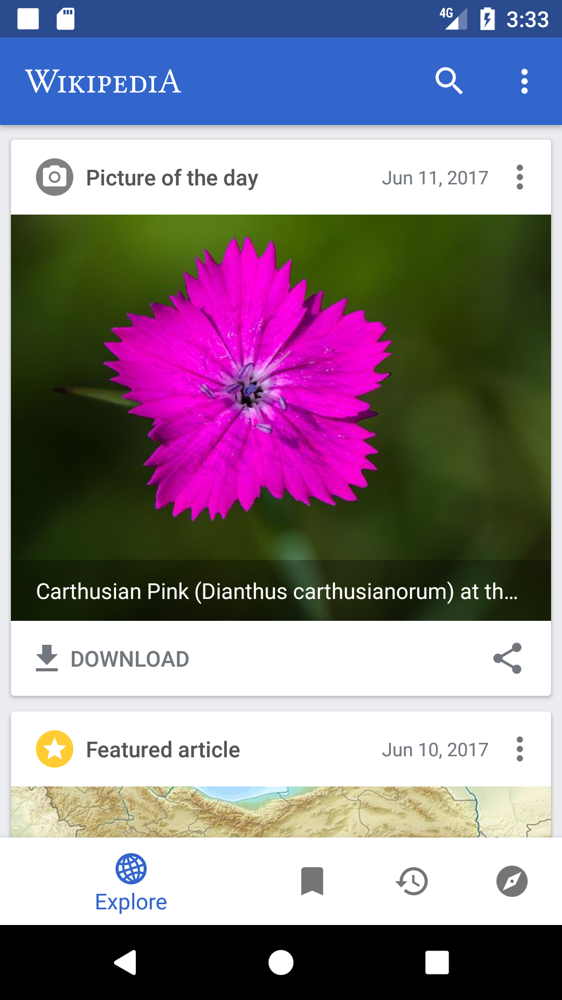
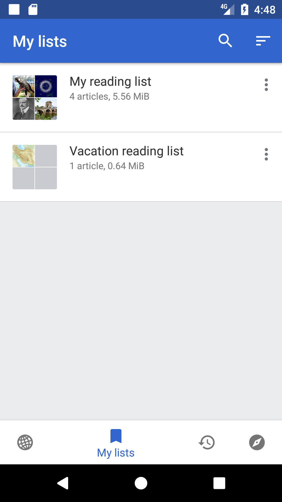
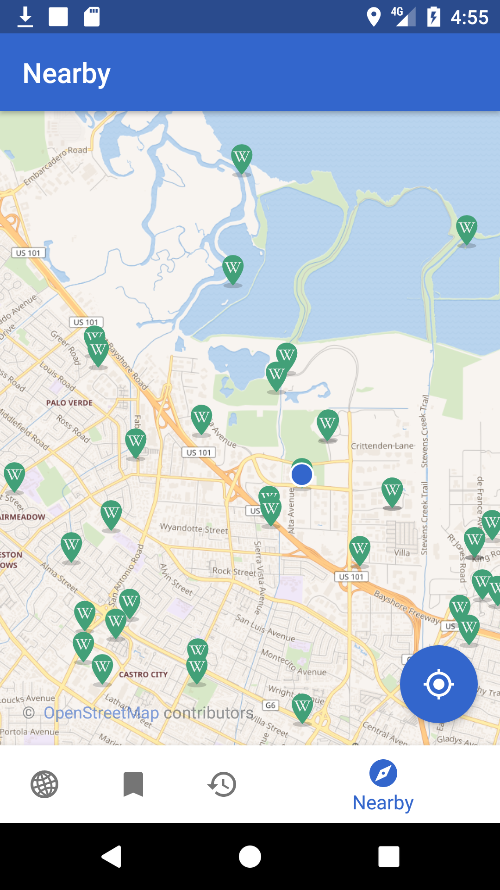
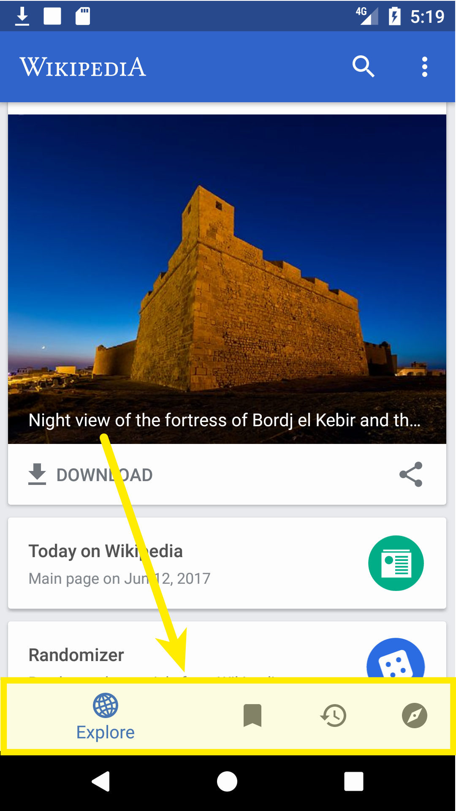
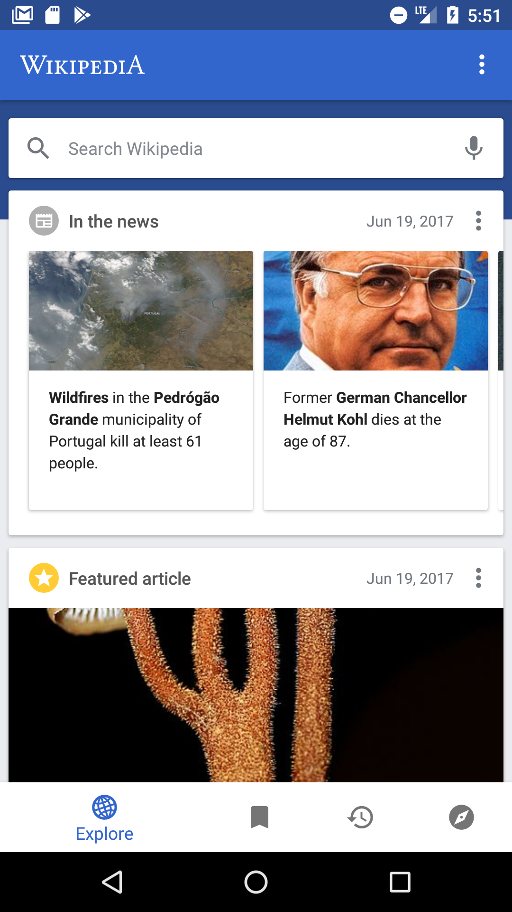
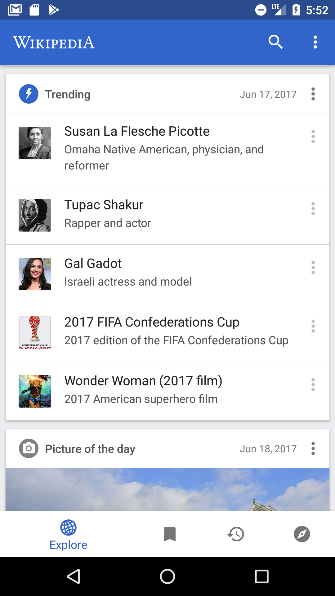
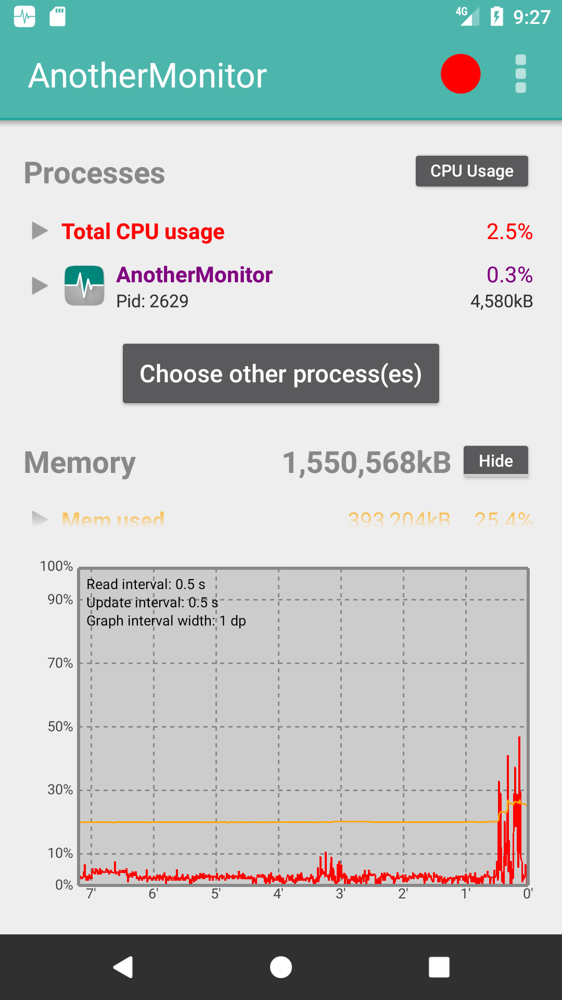
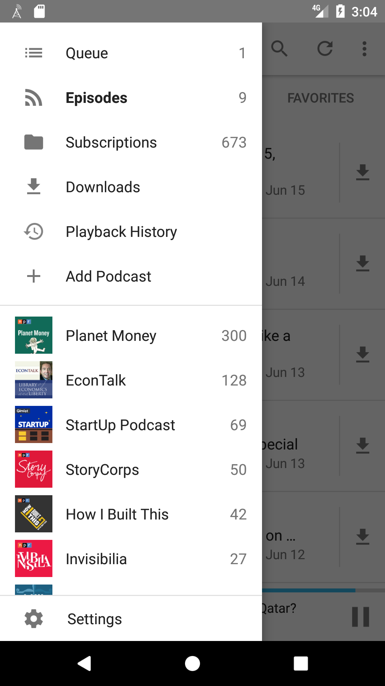
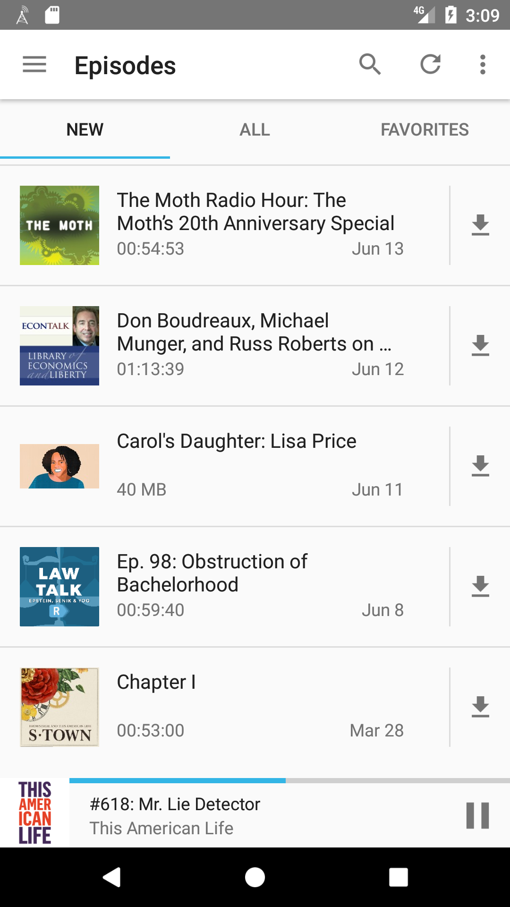

class: center, middle # Become a better Android developer ## with examples and patterns from open source ??? * Intro: 2 min * Wikipedia: 20 min * AnotherMonitor: 5 min * AntennaPod: 10 min * Gradle and code understanding tools: 5 min --- # About me * [@beyang](https://twitter.com/beyang) * CTO, [Sourcegraph](https://sourcegraph.com/) --- # What this talk is about * **Examples** from 3 open-source Android apps * A **process** you can use to efficiently discover these examples on your own * A **tool** built with Gradle to accelerate this process <br> <center> <h2>Follow along:</h2> <h2>[TODO: insert bit.ly URL]</h2> </center> ??? * Can refer to slides as reference later * Sourcegraph --- <div style="height: 100%; position: absolute; top: 30%;"> Good artists copy. Great artists steal. <br><br> —Picasso </div> --- # App #1: [Wikipedia](https://play.google.com/store/apps/details?id=org.wikipedia)    --- # App #1: [Wikipedia](https://play.google.com/store/apps/details?id=org.wikipedia) A medium-sized [open-source app](https://github.com/wikimedia/apps-android-wikipedia). * 738 Java files * 69,257 lines of code * 2,544 lines of comments * 9 out of 10 classes & methods have no docstring * 5,378 commits over 4 years * 496 GitHub stars If the Wikipedia app were a book, it'd be half the length of *Moby Dick*.<sup>*</sup> .footer[\* Assuming 1 LoC == 1.5 words] -- ## *Where are the Spark Notes?* <!-- --- --> <!-- # Ways to dive into code --> <!-- Good approaches: --> <!-- * Read the docs --> <!-- * Fix a bug --> <!-- * Get a tutorial from a coworker --> <!-- Bad approach: --> <!-- * Try to read the code --> <!-- ??? --> <!-- Read the docs --> <!-- * Pros: --> <!-- * Good high-level understanding --> <!-- * Cons: --> <!-- * If docs are long, can be tedious --> <!-- * Docs might not exist or be out of date --> <!-- Fix a bug: deep but narrow slice of knowledge --> <!-- * Pros --> <!-- * have to understand how things actually work --> <!-- * Cons --> <!-- * Takes a good amount of time --> <!-- * Only gives you narrow slice --> <!-- * Need an expert to help you pick good bugs (not too hard, not too easy, yields good knowledge) --> <!-- Tutorial from coworker --> <!-- * Pros --> <!-- * --> <!-- --- --> <!-- # Problems with reading code --> <!-- A codebase is like a dictionary. --> <!-- * A bunch of definitions --> <!-- * Definitions reference one another --> <!-- * No obvious place to start --> <!-- * No obvious narrative arc --> <!-- * Don't want to read the whole thing --> <!-- So reading it is **boring**. --> --- # General-purpose algorithm for reading code -- 1. Ask a question about how something works. 1. Figure out the answer.* 1. Repeat. .footer[\* You should understand the answer well enough that implementing it yourself would be "due diligence."] -- <center> <strong>Always have a question in mind you're trying to answer.</strong> </center> ??? Many ways to read and understand code. This is just one way. It has worked well for me as a professional programmer and worked well for me in teaching students as a T.A. -- ### Some "icebreaker" questions: 1. How does it arrive at its initial state? 1. Where's the "main" function? 1. What options does it present to the user after initialization? ??? Just like a conversation with a person, there are a few standard "icebreakers" you can use to get the conversation rolling. --- ### Wikipedia: how does it arrive at its initial state? <center> </center> --- ### Wikipedia: where's the "main" function? Looking for something like: ```java public class MainActivity { public void onCreate(Bundle savedInstanceState) { ... } } ``` ??? * Any Android developer knows that Android apps are built around "activities." * Main activity is called `MainActivity`. The initializer method for an `Activity` instance is `onCreate`, so let's start there. -- Search for the main activity class: [](https://sourcegraph.com/github.com/wikimedia/apps-android-wikipedia@8857c36d6a4ed4c106086d3436c2e3a4afd08f8c/-/blob/app/src/main/java/org/wikipedia/main/MainActivity.java#L13:14-13:26) --- ### Wikipedia: how does it arrive at its initial state? (continued) No `MainActivity.onCreate` method, so let's walk up its inheritance tree: <a href="https://sourcegraph.com/github.com/wikimedia/apps-android-wikipedia@edb0a841475606613ea4f6c3a4cda2d34c62b4e0/-/blob/app/src/main/java/org/wikipedia/main/MainActivity.java#L13-14"> ```java public class MainActivity extends SingleFragmentToolbarActivity<MainFragment> ``` </a> *extends* <a href="https://sourcegraph.com/github.com/wikimedia/apps-android-wikipedia@edb0a841475606613ea4f6c3a4cda2d34c62b4e0/-/blob/app/src/main/java/org/wikipedia/activity/SingleFragmentToolbarActivity.java#L15:23"> ```java public abstract class SingleFragmentToolbarActivity<T extends Fragment> extends SingleFragmentActivity<T> { ``` </a> *extends* <a href="https://sourcegraph.com/github.com/wikimedia/apps-android-wikipedia@edb0a841475606613ea4f6c3a4cda2d34c62b4e0/-/blob/app/src/main/java/org/wikipedia/activity/SingleFragmentActivity.java#L14:23"> ```java public abstract class SingleFragmentActivity<T extends Fragment> extends ThemedActionBarActivity { @Override public void onCreate(Bundle savedInstanceState) { super.onCreate(savedInstanceState); setContentView(getLayout()); if (!isFragmentCreated()) { addFragment(createFragment()); } } ``` ??? Walk up inheritance tree: * No `MainActivity.onCreate` * Inheritance tree * `FragmentManager` * `createFragment()` --- ### Wikipedia: how does it arrive at its initial state? (continued) <a href="https://sourcegraph.com/github.com/wikimedia/apps-android-wikipedia@edb0a841475606613ea4f6c3a4cda2d34c62b4e0/-/blob/app/src/main/java/org/wikipedia/main/MainActivity.java#L20-23"> ```java public class MainActivity extends SingleFragmentToolbarActivity<MainFragment> implements MainFragment.Callback { ... @Override protected MainFragment createFragment() { return MainFragment.newInstance(); } ``` </a> *creates new instance of `MainFragment`* ??? MainFragment --- ### Wikipedia: how does it arrive at its initial state? (continued) `MainFragment.onCreateView` wires up the tab bar to the view pager: <a href="https://sourcegraph.com/github.com/wikimedia/apps-android-wikipedia@edb0a841475606613ea4f6c3a4cda2d34c62b4e0/-/blob/app/src/main/java/org/wikipedia/main/MainFragment.java#L101-123:6"> ```java public class MainFragment extends Fragment implements BackPressedHandler, FeedFragment.Callback, NearbyFragment.Callback, HistoryFragment.Callback, SearchFragment.Callback, LinkPreviewDialog.Callback { @BindView(R.id.fragment_main_view_pager) ViewPager viewPager; @BindView(R.id.fragment_main_nav_tab_layout) NavTabLayout tabLayout; ... @Nullable @Override public View onCreateView(LayoutInflater inflater, @Nullable ViewGroup container, @Nullable Bundle savedInstanceState) { super.onCreateView(inflater, container, savedInstanceState); View view = inflater.inflate(R.layout.fragment_main, container, false); unbinder = ButterKnife.bind(this, view); viewPager.setAdapter(new NavTabFragmentPagerAdapter(getChildFragmentManager())); tabLayout.setOnNavigationItemSelectedListener(new BottomNavigationView.OnNavigationItemSelectedListener() { @Override public boolean onNavigationItemSelected(@NonNull MenuItem item) { viewPager.setCurrentItem(item.getOrder()); return true; } }); ``` </a> ??? MainFragment wire-up: * `createFragment() -> MainFragment` * `MainFragment.onCreateView` * "inflates" view from XML * Butterknife * `@BindView` * `Butterknife.bind` * wires up both a `ViewPager` view and a `NavTabLayout (BottomNavigationView)` view * The `ViewPager` instance gets its view from the `NavTabLayout` instance, so let's --- ### Wikipedia: how does it arrive at its initial state? (continued) `MainFragment.onCreateView` *inflates view from* `resources/fragment_main.xml` <a href="https://sourcegraph.com/github.com/wikimedia/apps-android-wikipedia@edb0a841475606613ea4f6c3a4cda2d34c62b4e0/-/blob/app/src/main/res/layout/fragment_main.xml#L28-37"> ```xml <org.wikipedia.navtab.NavTabLayout ``` </a> *references* `NavTabLayout.java` <a href="https://sourcegraph.com/github.com/wikimedia/apps-android-wikipedia@edb0a841475606613ea4f6c3a4cda2d34c62b4e0/-/blob/app/src/main/java/org/wikipedia/navtab/NavTabLayout.java#L25-30:6"> ```java public class NavTabLayout extends BottomNavigationView { ... private void setTabViews() { for (int i = 0; i < NavTab.size(); i++) { NavTab navTab = NavTab.of(i); getMenu().add(Menu.NONE, i, i, navTab.text()).setIcon(navTab.icon()); } } ``` </a> *calls* `NavTab.of` <a href="https://sourcegraph.com/github.com/wikimedia/apps-android-wikipedia@edb0a841475606613ea4f6c3a4cda2d34c62b4e0/-/blob/app/src/main/java/org/wikipedia/navtab/NavTab.java#L43-45:6"> ```java @NonNull public static NavTab of(int code) { return MAP.get(code); } ``` </a> ??? MainFragment -> NavTabLayout --- ### Wikipedia: how does it arrive at its initial state? (continued) *references* `NavTab.EXPLORE` <a href="https://sourcegraph.com/github.com/wikimedia/apps-android-wikipedia@edb0a841475606613ea4f6c3a4cda2d34c62b4e0/-/blob/app/src/main/java/org/wikipedia/navtab/NavTab.java#L16-21:7"> ```java public enum NavTab implements EnumCode { EXPLORE(R.string.nav_item_feed, R.drawable.ic_globe) { @NonNull @Override public Fragment newInstance() { return FeedFragment.newInstance(); } }, ``` </a> *references* `FeedFragment.newInstance` <a href="https://sourcegraph.com/github.com/wikimedia/apps-android-wikipedia@edb0a841475606613ea4f6c3a4cda2d34c62b4e0/-/blob/app/src/main/java/org/wikipedia/feed/FeedFragment.java#L75-76"> ```java @NonNull public static FeedFragment newInstance() { ``` </a> ??? NavTab layout -> FeedFragment.newInstance --- ### Wikipedia: how does it arrive at its initial state? (recap) <table class="fragment-views"> <tr> <th> Activity hierarchy </th> <th> Views </th> </tr> <tr> <td> <code>MainActivity</code> </td> <td> <code>FrameLayout</code> </td> </tr> <tr> <td> <code> MainFragment</code> </td> <td> <code>CoordinatorLayout</code><br> <code> NoSwipeViewPager (ViewPager)</code><br> <code>NavTabLayout</code> </td> </tr> <tr> <td> <code> FeedFragment</code> </td> <td> <code>FeedView (RecyclerView)</code> </td> </tr> <tr> <td> <code> ReadingListsFragment</code> </td> <td> <code>RecyclerView</code> </td> </tr> <tr> <td> <code> HistoryFragment</code> </td> <td> <code>RecyclerView</code> </td> </tr> <tr> <td> <code> NearbyFragment</code> </td> <td> <code>MapView</code> </td> </tr> </table> <br> <table class="fragment-views"> <tr> <th colspan="2"> Other classes </th> </tr> <tr> <td colspan="2"> <code>NavTab</code> </td> </tr> </table> --- Note the use of [Butterknife](https://github.com/JakeWharton/butterknife) to bind view objects to fields in the fragments. <a href="https://sourcegraph.com/github.com/wikimedia/apps-android-wikipedia@edb0a841475606613ea4f6c3a4cda2d34c62b4e0/-/blob/app/src/main/java/org/wikipedia/main/MainFragment.java#L74:14-74:26"> ```java public class MainFragment extends Fragment implements BackPressedHandler, FeedFragment.Callback, NearbyFragment.Callback, HistoryFragment.Callback, SearchFragment.Callback, LinkPreviewDialog.Callback { ... @BindView(R.id.fragment_main_view_pager) ViewPager viewPager; @BindView(R.id.fragment_main_nav_tab_layout) NavTabLayout tabLayout; private Unbinder unbinder; ... @Nullable @Override public View onCreateView(LayoutInflater inflater, @Nullable ViewGroup container, @Nullable Bundle savedInstanceState) { ... unbinder = ButterKnife.bind(this, view); ... } ... @Override public void onDestroyView() { unbinder.unbind(); unbinder = null; super.onDestroyView(); } ... } ``` </a> ??? Butterknife * Calls to `ButterKnife.bind` replace `findViewById` boilerplate --- ### EnumCode: checked conversion of ints to enums <a href="https://sourcegraph.com/github.com/wikimedia/apps-android-wikipedia@8857c36d6a4ed4c106086d3436c2e3a4afd08f8c/-/blob/app/src/main/java/org/wikipedia/model/EnumCode.java#L3:18-3:26"> ```java public interface EnumCode { int code(); } ``` </a> Pattern used in 16 files, including: <a href="https://sourcegraph.com/github.com/wikimedia/apps-android-wikipedia@8857c36d6a4ed4c106086d3436c2e3a4afd08f8c/-/blob/app/src/main/java/org/wikipedia/database/http/HttpStatus.java#L9:35-9:43"> ```java public enum HttpStatus implements EnumCode { SYNCHRONIZED(0), OUTDATED(1), MODIFIED(2), ... private static final EnumCodeMap<HttpStatus> MAP = new EnumCodeMap<>(HttpStatus.class); private final int code; @NonNull public static HttpStatus of(int code) { return MAP.get(code); } ... ``` </a> --- ### What can the user do from here? The `NavTab` class outlines exactly what the user's options are: <a href="https://sourcegraph.com/github.com/wikimedia/apps-android-wikipedia@8857c36d6a4ed4c106086d3436c2e3a4afd08f8c/-/blob/app/src/main/java/org/wikipedia/navtab/NavTab.java#L16-36:7"> ```java public enum NavTab implements EnumCode { EXPLORE(R.string.nav_item_feed, R.drawable.ic_globe) { @NonNull @Override public Fragment newInstance() { return FeedFragment.newInstance(); } }, READING_LISTS(R.string.nav_item_reading_lists, R.drawable.ic_bookmark_white_24dp) { @NonNull @Override public Fragment newInstance() { return ReadingListsFragment.newInstance(); } }, HISTORY(R.string.nav_item_history, R.drawable.ic_restore_black_24dp) { @NonNull @Override public Fragment newInstance() { return HistoryFragment.newInstance(); } }, NEARBY(R.string.nav_item_nearby, R.drawable.ic_explore_black_24dp) { @NonNull @Override public Fragment newInstance() { return NearbyFragment.newInstance(); } }; ... } ``` </a> --- ### What can the user do from here? And these map clearly onto what's present in the UI: <center>  </center> --- # Where to go from here? 1. How does the **feed** work? 1. How do the **reading lists** work? 1. How does the **map** work? 1. How is this app **tested**? ??? 1. Feed * Clever performance hacks? * Background fetching? 1. Reading lists 1. Map * Points of interest? * API client boilerplate? 1. How is this app tested? --- ### How does the feed work? * Very smooth UX * Lazily fetches from server * Different types of cards <center>   </center> --- ### How does it load and display cards? `FeedFragment` holds references to models and views for the feed. <a href="https://sourcegraph.com/github.com/wikimedia/apps-android-wikipedia@8857c36d6a4ed4c106086d3436c2e3a4afd08f8c/-/blob/app/src/main/java/org/wikipedia/feed/FeedFragment.java#L44:14-44:26"> ```java public class FeedFragment extends Fragment implements BackPressedHandler { @BindView(R.id.feed_swipe_refresh_layout) SwipeRefreshLayout swipeRefreshLayout; @BindView(R.id.fragment_feed_feed) FeedView feedView; @BindView(R.id.fragment_feed_header) View feedHeader; private FeedAdapter<?> feedAdapter; private WikipediaApp app; private FeedCoordinator coordinator; private FeedFunnel funnel; private final FeedAdapter.Callback feedCallback = new FeedCallback(); private FeedScrollListener feedScrollListener = new FeedScrollListener(); private OverflowCallback overflowCallback = new OverflowCallback(); ... @Nullable @Override public View onCreateView(LayoutInflater inflater, @Nullable ViewGroup container, @Nullable Bundle savedInstanceState) { super.onCreateView(inflater, container, savedInstanceState); View view = inflater.inflate(R.layout.fragment_feed, container, false); unbinder = ButterKnife.bind(this, view); feedAdapter = new FeedAdapter<>(coordinator, feedCallback); feedView.setAdapter(feedAdapter); feedView.setCallback(feedCallback); feedView.addOnScrollListener(feedScrollListener); swipeRefreshLayout.setColorSchemeResources(R.color.foundation_blue); swipeRefreshLayout.setOnRefreshListener(new SwipeRefreshLayout.OnRefreshListener() { ... ``` </a> ??? * Views: `SwipeRefreshLayout`, `FeedView`, feed header * Adapters: `FeedAdapter` * Callbacks and listeners * Other classes (models and data sources): `WikipediaApp`, `FeedCoordinator` * Butterknife usage again --- ### How does the feed view work? <a href="https://sourcegraph.com/github.com/wikimedia/apps-android-wikipedia@8857c36d6a4ed4c106086d3436c2e3a4afd08f8c/-/blob/app/src/main/java/org/wikipedia/feed/FeedFragment.java#L46-47"> ```java public class FeedFragment extends Fragment implements BackPressedHandler { ... @BindView(R.id.fragment_feed_feed) FeedView feedView; ``` </a> `FeedView` subclasses `RecyclerView`: <a href="https://sourcegraph.com/github.com/wikimedia/apps-android-wikipedia@8857c36d6a4ed4c106086d3436c2e3a4afd08f8c/-/blob/app/src/main/java/org/wikipedia/feed/view/FeedView.java#L19:14"> ```java public class FeedView extends AutoFitRecyclerView { private StaggeredGridLayoutManager recyclerLayoutManager; @Nullable private ItemTouchHelper itemTouchHelper; public FeedView(Context context) { super(context); init(); } public FeedView(Context context, AttributeSet attrs) { super(context, attrs); init(); } ... ``` </a> Side note: the `RecyclerView` [documentation](https://developer.android.com/reference/android/support/v7/widget/RecyclerView.html) is 13,000 words long. ??? `RecyclerView`: "a flexible view for providing a limited window into a large data set." --- ### Where are the card views created and updated? `RecyclerView` subclasses fetch data through a `RecyclerView.Adapter` subclass: <a href="https://sourcegraph.com/github.com/wikimedia/apps-android-wikipedia@edb0a841475606613ea4f6c3a4cda2d34c62b4e0/-/blob/app/src/main/java/org/wikipedia/feed/view/FeedAdapter.java#L42-47"> ```java public class FeedAdapter<T extends View & FeedCardView<?>> extends DefaultRecyclerAdapter<Card, T> { ... @Override public DefaultViewHolder<T> onCreateViewHolder(ViewGroup parent, int viewType) { return new DefaultViewHolder<>(newView(parent.getContext(), viewType)); } @Override public void onBindViewHolder(DefaultViewHolder<T> holder, int position) { Card item = item(position); T view = holder.getView(); if (coordinator.finished() && position == getItemCount() - 1 && callback != null) { callback.onRequestMore(); } //noinspection unchecked ((FeedCardView<Card>) view).setCard(item); if (view instanceof OfflineCardView && position == 1) { ((OfflineCardView) view).setTopPadding(); } } ``` </a> ??? Standard `RecyclerView` pattern: * `onCreateViewHolder`: when new child view is created * `onBindViewHolder`: as the user scrolls * child views are recycled --- ### How do you customize card appearance? Child view (card) classes satisfy common interface: <a href="https://sourcegraph.com/github.com/wikimedia/apps-android-wikipedia@edb0a841475606613ea4f6c3a4cda2d34c62b4e0/-/blob/app/src/main/java/org/wikipedia/feed/view/FeedCardView.java#L8-12:2"> ```java public interface FeedCardView<T extends Card> { void setCard(@NonNull T card); @Nullable T getCard(); void setCallback(@Nullable FeedAdapter.Callback callback); } ``` </a> The type of card is determined at runtime: <a href=""> ```java public class FeedAdapter<T extends View & FeedCardView<?>> extends DefaultRecyclerAdapter<Card, T> { ... @NonNull private T newView(@NonNull Context context, int viewType) { //noinspection unchecked return (T) CardType.of(viewType).newView(context); } ``` </a> --- ### How do you customize card appearance? Different card view classes, identified by enum backed by `EnumCode`: <a href="https://sourcegraph.com/github.com/wikimedia/apps-android-wikipedia@edb0a841475606613ea4f6c3a4cda2d34c62b4e0/-/blob/app/src/main/java/org/wikipedia/feed/model/CardType.java#L22:13-22:21"> ```java public enum CardType implements EnumCode { SEARCH_BAR(0) { @NonNull @Override public FeedCardView<?> newView(@NonNull Context ctx) { return new SearchCardView(ctx); } }, CONTINUE_READING(1) { @NonNull @Override public FeedCardView<?> newView(@NonNull Context ctx) { return new ContinueReadingCardView(ctx); } }, BECAUSE_YOU_READ_LIST(2) { @NonNull @Override public FeedCardView<?> newView(@NonNull Context ctx) { return new BecauseYouReadCardView(ctx); } }, MOST_READ_LIST(3) { @NonNull @Override public FeedCardView<?> newView(@NonNull Context ctx) { return new MostReadCardView(ctx); } }, FEATURED_ARTICLE(4) { @NonNull @Override public FeedCardView<?> newView(@NonNull Context ctx) { return new FeaturedArticleCardView(ctx); } ``` </a> --- ### What is the "model" for a card and where does it come from? `FeedAdapter` gives a `Card` instance to the view. `Card`s are provided by `FeedCoordinatorBase`. <a href="https://sourcegraph.com/github.com/wikimedia/apps-android-wikipedia@edb0a841475606613ea4f6c3a4cda2d34c62b4e0/-/blob/app/src/main/java/org/wikipedia/feed/view/FeedAdapter.java#L46:27-46:43"> ```java public class FeedAdapter<T extends View & FeedCardView<?>> extends DefaultRecyclerAdapter<Card, T> { ... @NonNull private FeedCoordinatorBase coordinator; ... public FeedAdapter(@NonNull FeedCoordinatorBase coordinator, @Nullable Callback callback) { super(coordinator.getCards()); ... } ... @Override public void onBindViewHolder(DefaultViewHolder<T> holder, int position) { Card item = item(position); ... ((FeedCardView<Card>) view).setCard(item); ``` </a> <a href="https://sourcegraph.com/github.com/wikimedia/apps-android-wikipedia@edb0a841475606613ea4f6c3a4cda2d34c62b4e0/-/blob/app/src/main/java/org/wikipedia/views/DefaultRecyclerAdapter.java#L9:23"> ```java public abstract class DefaultRecyclerAdapter<T, V extends View> extends RecyclerView.Adapter<DefaultViewHolder<V>> { public DefaultRecyclerAdapter(@NonNull List<T> items) { this.items = items; } ... protected T item(int position) { return items.get(position); } ``` </a> ??? * Now know how views are managed. * Now ask where does data come from? * `onBindViewHolder` -> * `DefaultRecyclerAdapter.item()` -> * `FeedAdapter` constructor * `FeedCoordinatorBase` field --- ### Where does the model fetch the data from? <a href="https://sourcegraph.com/github.com/wikimedia/apps-android-wikipedia@edb0a841475606613ea4f6c3a4cda2d34c62b4e0/-/blob/app/src/main/java/org/wikipedia/feed/view/FeedAdapter.java#L33:54"> ```java public abstract class FeedCoordinatorBase { ... private FeedClient.Callback callback = new ClientRequestCallback(); ... private void requestCard(@NonNull WikiSite wiki) { if (pendingClients.isEmpty()) { removeProgressCard(); return; } pendingClients.get(0).request(context, wiki, currentAge, callback); } ... private void appendCard(@NonNull Card card) { int progressPos = cards.indexOf(progressCard); insertCard(card, progressPos >= 0 ? progressPos : cards.size()); } ``` </a> <a href="https://sourcegraph.com/github.com/wikimedia/apps-android-wikipedia@edb0a841475606613ea4f6c3a4cda2d34c62b4e0/-/blob/app/src/main/java/org/wikipedia/feed/FeedCoordinatorBase.java#L149:19-149:40"> ```java private class ClientRequestCallback implements FeedClient.Callback { @Override public void success(@NonNull List<? extends Card> cardList) { for (Card card : cardList) { if (!isCardHidden(card)) { appendCard(card); } } requestNextCard(wiki); } ``` </a> ??? * `requestCard` triggers remote request chain for card data * callback receives requests back and inserts data into model --- <a href="https://sourcegraph.com/github.com/wikimedia/apps-android-wikipedia@edb0a841475606613ea4f6c3a4cda2d34c62b4e0/-/blob/app/src/main/java/org/wikipedia/feed/FeedCoordinator.java#L14-36:2"> ```java class FeedCoordinator extends FeedCoordinatorBase { ... protected void buildScript(int age) { if (age == 0) { addPendingClient(new SearchClient()); addPendingClient(new AnnouncementClient()); } addPendingClient(new AggregatedFeedContentClient()); addPendingClient(new ContinueReadingClient()); ... } } ``` </a> Using [Retrofit](https://sourcegraph.com/github.com/square/retrofit/-/blob/README.md) to query REST API: <a href="https://sourcegraph.com/github.com/wikimedia/apps-android-wikipedia@edb0a841475606613ea4f6c3a4cda2d34c62b4e0/-/blob/app/src/main/java/org/wikipedia/feed/aggregated/AggregatedFeedContentClient.java#L33:14-33:41"> ```java public class AggregatedFeedContentClient implements FeedClient { @Nullable private Call<AggregatedFeedContent> call; @Override public void request(@NonNull Context context, @NonNull WikiSite wiki, int age, @NonNull Callback cb) { cancel(); UtcDate date = DateUtil.getUtcRequestDateFor(age); String endpoint = String.format(Locale.ROOT, Prefs.getRestbaseUriFormat(), wiki.scheme(), wiki.authority()); Retrofit retrofit = RetrofitFactory.newInstance(endpoint, wiki); AggregatedFeedContentClient.Service service = retrofit.create(Service.class); call = service.get(date.year(), date.month(), date.date()); call.enqueue(new CallbackAdapter(cb, wiki, age)); } ``` </a> ??? * Clients include many types of cards * Each client class offers good examples of how to query REST API * Example use of the Retrofit library. (A "type-safe HTTP client for Android" to expose a REST API as a Java interface). --- ### How does the feed work? (recap) <table class="fragment-views"> <tr> <th> Activity hierarchy </th> <th> Views </th> </tr> <tr> <td> <code>FeedFragment</code> </td> <td> <code>FeedView (RecyclerView)</code><br> <code>FeedCardView</code> </td> </tr> </table> <br> <table class="fragment-views"> <tr> <th colspan="2"> Other classes </th> </tr> <tr> <td colspan="2"> <code>CardType</code> </td> </tr> <tr> <td colspan="2"> <code>FeedAdapter</code> </td> </tr> <tr> <td colspan="2"> <code>FeedCoordinator</code> </td> </tr> <tr> <td colspan="2"> <code>FeedClient</code> </td> </tr> </table> --- # How does the map work? <center></center> --- # How does the map work? <a href="https://sourcegraph.com/github.com/wikimedia/apps-android-wikipedia@edb0a841475606613ea4f6c3a4cda2d34c62b4e0/-/blob/app/src/main/java/org/wikipedia/nearby/NearbyFragment.java#L69:14-69:28"> ```java public class NearbyFragment extends Fragment { ... @BindView(R.id.mapview) MapView mapView; ... private void initializeMap() { mapView.getMapAsync(new OnMapReadyCallback() { @Override public void onMapReady(@NonNull MapboxMap mapboxMap) { NearbyFragment.this.mapboxMap = mapboxMap; enableUserLocationMarker(); mapboxMap.getTrackingSettings().setMyLocationTrackingMode(MyLocationTracking.TRACKING_NONE); mapboxMap.setOnScrollListener(new MapboxMap.OnScrollListener() { @Override public void onScroll() { fetchNearbyPages(); } }); ``` </a> ??? * `NearbyFragment.initializeMap()` --- ### How does Wikipedia fetch data for the map? `initializeMap` *calls* `fetchNearbyPages`, <a href="https://sourcegraph.com/github.com/wikimedia/apps-android-wikipedia@edb0a841475606613ea4f6c3a4cda2d34c62b4e0/-/blob/app/src/main/java/org/wikipedia/nearby/NearbyFragment.java#L378:18"> ```java public class NearbyFragment extends Fragment { ... private void fetchNearbyPages() { final int fetchTaskDelayMillis = 500; mapView.removeCallbacks(fetchTaskRunnable); mapView.postDelayed(fetchTaskRunnable, fetchTaskDelayMillis); } ``` </a> *calls* `fetchTaskRunnable`. --- `fetchTaskRunnable` *calls* `client.request` in background, `client` an instance of `NearbyClient`: <a href="https://sourcegraph.com/github.com/wikimedia/apps-android-wikipedia@edb0a841475606613ea4f6c3a4cda2d34c62b4e0/-/blob/app/src/main/java/org/wikipedia/nearby/NearbyFragment.java#L384:22-384:39"> ```java private Runnable fetchTaskRunnable = new Runnable() { @Override public void run() { if (!isResumed() || mapboxMap == null) { return; } onLoading(); WikiSite wiki = WikipediaApp.getInstance().getWikiSite(); client.request(wiki, mapboxMap.getCameraPosition().target.getLatitude(), mapboxMap.getCameraPosition().target.getLongitude(), getMapRadius(), new NearbyClient.Callback() { @Override public void success(@NonNull Call<MwQueryResponse<Nearby>> call, @NonNull NearbyResult result) { if (!isResumed()) { return; } lastResult = result; showNearbyPages(result); onLoaded(); } ``` </a> --- `NearbyClient` wraps an instance of `MwCachedService`, <a href="https://sourcegraph.com/github.com/wikimedia/apps-android-wikipedia@edb0a841475606613ea4f6c3a4cda2d34c62b4e0/-/blob/app/src/main/java/org/wikipedia/nearby/NearbyClient.java#L21:7-21:19"> ```java class NearbyClient { ... @NonNull private final WikiCachedService<Service> cachedService = new MwCachedService<>(Service.class); public Call<MwQueryResponse<Nearby>> request(@NonNull WikiSite wiki, double latitude, double longitude, double radius, @NonNull Callback cb) { return request(wiki, cachedService.service(wiki), latitude, longitude, radius, cb); } } ``` </a> which returns an instance of `Retrofit`, <a href="https://sourcegraph.com/github.com/wikimedia/apps-android-wikipedia@edb0a841475606613ea4f6c3a4cda2d34c62b4e0/-/blob/app/src/main/java/org/wikipedia/dataclient/retrofit/MwCachedService.java#L7:14-7:29"> ```java public class MwCachedService<T> extends WikiCachedService<T> { public MwCachedService(@NonNull Class<T> clazz) { super(clazz); } @NonNull @Override protected Retrofit create() { return RetrofitFactory.newInstance(wiki()); } } ``` </a> --- `RetrofitFactory` constructs `Retrofit` instances: <a href="https://sourcegraph.com/github.com/wikimedia/apps-android-wikipedia@edb0a841475606613ea4f6c3a4cda2d34c62b4e0/-/blob/app/src/main/java/org/wikipedia/dataclient/retrofit/RetrofitFactory.java#L18:20-18:35"> ```java public final class RetrofitFactory { public static Retrofit newInstance(@NonNull WikiSite wiki) { return newInstance(wiki.url() + "/", wiki); } public static Retrofit newInstance(@NonNull String endpoint, @NonNull WikiSite wiki) { return new Retrofit.Builder() .client(OkHttpConnectionFactory.getClient().newBuilder() .addInterceptor(new LanguageVariantHeaderInterceptor(wiki)).build()) .baseUrl(endpoint) .addConverterFactory(GsonConverterFactory.create(GsonUtil.getDefaultGson())) .build(); } ``` </a> --- ### How is the REST client tested? Mockito used to mock API endpoints in tests: <a href="https://sourcegraph.com/github.com/wikimedia/apps-android-wikipedia@edb0a841475606613ea4f6c3a4cda2d34c62b4e0/-/blob/app/src/test/java/org/wikipedia/nearby/NearbyClientTest.java#L26:14-26:30"> ```java import static org.mockito.Mockito.mock; ... public class NearbyClientTest extends MockWebServerTest { @NonNull private final NearbyClient subject = new NearbyClient(); @Test public void testRequestSuccessHasResults() throws Throwable { enqueueFromFile("nearby.json"); NearbyClient.Callback cb = mock(NearbyClient.Callback.class); Call<MwQueryResponse<Nearby>> call = request(cb); server().takeRequest(); assertCallbackSuccess(call, cb); } ``` </a> <!-- --- --> <!-- ## Wikipedia, the SparkNotes --> <!-- - `NavTab`-based app built around 4 main `Fragment` subclasses --> <!-- - Subclasses `RecyclerView` and `RecyclerView.Adapter` for efficient table-based views --> <!-- - Uses `MapView` for the map --> <!-- - Uses OkHttp and Retrofit for calls to Wikipedia API, Mockito to test this --> --- # App #2: [AnotherMonitor](https://play.google.com/store/apps/details?id=org.anothermonitor) <table> <tr> <td width="50%">  </td> <td width="50%" style="vertical-align: top;"> A small open-source app that displays system-level stats. <ul> <li>14 Java files</li> <br> <li>3,811 lines of code</li> <br> <li>Very few comments</li> <br> <li>43 commits over 2 years</li> <br> <li>426 GitHub stars</li> </ul> </td> </tr> </table> --- ## AnotherMonitor features of interest * Recording CPU and memory usage * Drawing the chart --- ### Where's the "main" function? <a href="https://sourcegraph.com/github.com/AntonioRedondo/AnotherMonitor@8b7fc67af9216ccdd3209cc014901b12efb5da3e/-/blob/AnotherMonitor/src/main/java/org/anothermonitor/ActivityMain.java#L246:14-246:22"> ```java public class ActivityMain extends Activity { ... public void onCreate(Bundle savedInstanceState) { super.onCreate(savedInstanceState); startService(new Intent(this, ServiceReader.class)); setContentView(R.layout.activity_main); mPrefs = getSharedPreferences(getString(R.string.app_name) + C.prefs, MODE_PRIVATE); ... res = getResources(); sD = res.getDisplayMetrics().density; ... mVG = (ViewGraphic) findViewById(R.id.ANGraphic); graphicMode = mPrefs.getInt(C.graphicMode, C.graphicModeShowMemory); mVG.setGraphicMode(graphicMode); ... mBMemory = (Button) findViewById(R.id.BMemory); mBMemory.setOnClickListener(new View.OnClickListener() { ... }); ... } ``` </a> ??? * Look for `ActivityMain.onCreate` again * `ServiceReader` class might be recorder service * wires up views to listeners * `findViewById`, instead of using Butterknife * `ViewGraphic` class --- ### How does it render this data in a chart? `ViewGraphic` extends `TextureView` (for content streams like video or 3D) <a href="https://sourcegraph.com/github.com/AntonioRedondo/AnotherMonitor@8b7fc67af9216ccdd3209cc014901b12efb5da3e/-/blob/AnotherMonitor/src/main/java/org/anothermonitor/ViewGraphic.java#L29:14-29:25"> ```java public class ViewGraphic extends TextureView { private boolean graphicInitialised, cpuTotalD, cpuAMD, memUsedD, memAvailableD, memFreeD, cachedD, thresholdD; private int processesMode, graphicMode, yTop, yBottom, xLeft, xRight, yBottomTextSpace=25, xLeftTextSpace=10, yLegendSpace = 8, graphicHeight, graphicWidth, minutes, seconds, intervalTotalNumber, memTotal, thickParam, thickGrid, thickEdges, tempVar, textSize, textSizeLegend, yTopSeparation; private String readIntervalText, updateIntervalText, graphicIntervaWidthlText, recordingText = "Recording"; private Rect bgRect; ... private ServiceReader mSR; private Resources res; private Thread mThread; ... } ``` </a> ??? * `TextureView`: special hardware-accelerated view, can be rendered in separate thread. --- ### How does it render this data in a chart? View update logic spread across 2 classes. Anti-pattern? <a href="https://sourcegraph.com/github.com/AntonioRedondo/AnotherMonitor@8b7fc67af9216ccdd3209cc014901b12efb5da3e/-/blob/AnotherMonitor/src/main/java/org/anothermonitor/ActivityMain.java#L115-127"> ```java public class ActivityMain extends Activity { ... private Runnable drawRunnable = new Runnable() { ... }, drawRunnableGraphic = new Runnable() { @Override public void run() { mThread = new Thread() { @Override public void run() { Canvas canvas = null; if (!canvasLocked) { // http://stackoverflow.com/questions/9792446/android-java-lang-illegalargumentexception canvas = mVG.lockCanvas(); if (canvas != null) { canvasLocked = true; mVG.onDrawCustomised(canvas, mThread); // https://github.com/AntonioRedondo/AnotherMonitor/issues/1 // http://stackoverflow.com/questions/23893813/canvas-restore-causing-underflow-exception-in-very-rare-cases try { mVG.unlockCanvasAndPost(canvas); } catch (IllegalStateException e) { Log.w("Activity main: ", e.getMessage()); } ``` </a> ??? * `canvas = mVG.lockCanvas()` * `mVG.onDrawCustomized(canvas, mThread)` --- ### How does it render this data in a chart? <a href="https://sourcegraph.com/github.com/AntonioRedondo/AnotherMonitor@8b7fc67af9216ccdd3209cc014901b12efb5da3e/-/blob/AnotherMonitor/src/main/java/org/anothermonitor/ViewGraphic.java#L29:14-29:25"> ```java public class ViewGraphic extends TextureView { ... // @Override @SuppressWarnings("unchecked") protected void onDrawCustomised(Canvas canvas, Thread thread) { if (mSR == null || canvas == null) return; else if (!graphicInitialised) initializeGraphic(); mThread = thread; ... if (mThread == null || mThread.isInterrupted()) return; canvas.drawColor(Color.TRANSPARENT, PorterDuff.Mode.CLEAR); if (mThread.isInterrupted()) return; canvas.drawRect(bgRect, bgPaint); ... } } ``` </a> ??? * `mVG.onDrawCustomized(canvas, mThread)` draws to canvas on the thread --- ### Where does CPU and memory data come from? `ServiceReader` class provides CPU and memory data to views: <a href="https://sourcegraph.com/github.com/AntonioRedondo/AnotherMonitor@8b7fc67af9216ccdd3209cc014901b12efb5da3e/-/blob/AnotherMonitor/src/main/java/org/anothermonitor/ActivityMain.java#L88:19"> ```java public class ActivityMain extends Activity { ... private ServiceReader mSR; ... private Runnable drawRunnable = new Runnable() { @Override public void run() { ... setTextLabelCPU(null, mTVCPUTotalP, mSR.getCPUTotalP()); ... setTextLabelMemory(mTVMemUsed, mTVMemUsedP, mSR.getMemUsed()); setTextLabelMemory(mTVMemAvailable, mTVMemAvailableP, mSR.getMemAvailable()); setTextLabelMemory(mTVMemFree, mTVMemFreeP, mSR.getMemFree()); setTextLabelMemory(mTVCached, mTVCachedP, mSR.getCached()); setTextLabelMemory(mTVThreshold, mTVThresholdP, mSR.getThreshold()); ``` </a> --- ### Where does CPU and memory data come from? (continued) `ServiceReader` reads stats on a background thread: <a href="https://sourcegraph.com/github.com/AntonioRedondo/AnotherMonitor@8b7fc67af9216ccdd3209cc014901b12efb5da3e/-/blob/AnotherMonitor/src/main/java/org/anothermonitor/ServiceReader.java#L53:14-53:27"> ```java public class ServiceReader extends Service { ... private ActivityManager.MemoryInfo mi; ... private Runnable readRunnable = new Runnable() { @Override public void run() { // The service makes use of an explicit Thread instead of a Handler because with the Threat the code is executed more synchronously. // However the ViewGraphic is drawed with a Handler because the drawing code must be executed in the UI thread. Thread thisThread = Thread.currentThread(); while (readThread == thisThread) { read(); try { Thread.sleep(intervalRead); } catch (InterruptedException e) { break; } } } }; private volatile Thread readThread = new Thread(readRunnable, C.readThread); ... } ``` </a> ??? * `readThread` (at bottom) --- ### Where does CPU and memory data come from? (continued) Android is just Linux: <a href="https://sourcegraph.com/github.com/AntonioRedondo/AnotherMonitor@8b7fc67af9216ccdd3209cc014901b12efb5da3e/-/blob/AnotherMonitor/src/main/java/org/anothermonitor/ServiceReader.java#L259:15-259:19"> ```java public class ServiceReader extends Service { ... private void read() { try { reader = new BufferedReader(new FileReader("/proc/meminfo")); s = reader.readLine(); while (s != null) { ... } ... // CPU usage percents calculation. It is possible negative values or values higher than 100% may appear. // http://stackoverflow.com/questions/1420426 // http://kernel.org/doc/Documentation/filesystems/proc.txt reader = new BufferedReader(new FileReader("/proc/stat")); sa = reader.readLine().split("[ ]+", 9); work = Long.parseLong(sa[1]) + Long.parseLong(sa[2]) + Long.parseLong(sa[3]); total = work + Long.parseLong(sa[4]) + Long.parseLong(sa[5]) + Long.parseLong(sa[6]) + Long.parseLong(sa[7]); ... } ... } ``` </a> ??? * /proc/meminfo --- # App #3: [AntennaPod](http://antennapod.org/)  --- # App #3: [AntennaPod](http://antennapod.org/) A medium-sized [open-source](https://sourcegraph.com/github.com/AntennaPod/AntennaPod/-/blob/README.md) podcast app. * 356 Java files * 60,937 lines of code * 3,937 commits over 5.5 years * 1,577 GitHub stars --- # AntennaPod topics of interest * How do you create a navigation menu interface? * How do you make a "sticky" playback interface? * How do you persist large audio files? --- ### Where's the "main" function? <a href="https://sourcegraph.com/github.com/AntennaPod/AntennaPod@b3a879dd8f938fc3086dfd73c8cb915b1da7cecd/-/blob/app/src/main/java/de/danoeh/antennapod/activity/MainActivity.java?q=class%20CastEnabledActivity#L125:17-125:25"> ```java /** * The activity that is shown when the user launches the app. */ public class MainActivity extends CastEnabledActivity implements NavDrawerActivity { ... @Override public void onCreate(Bundle savedInstanceState) { setTheme(UserPreferences.getNoTitleTheme()); super.onCreate(savedInstanceState); StorageUtils.checkStorageAvailability(this); setContentView(R.layout.main); toolbar = (Toolbar) findViewById(R.id.toolbar); setSupportActionBar(toolbar); ... } ``` </a> ??? * `UserPreferences` class --- ### What's happens on initialization? <a href="https://sourcegraph.com/github.com/AntennaPod/AntennaPod@b3a879dd8f938fc3086dfd73c8cb915b1da7cecd/-/blob/app/src/main/java/de/danoeh/antennapod/activity/MainActivity.java#L125:17-125:25"> ```java public class MainActivity extends CastEnabledActivity implements NavDrawerActivity { ... public void onCreate(Bundle savedInstanceState) { ... toolbar = (Toolbar) findViewById(R.id.toolbar); setSupportActionBar(toolbar); ... drawerLayout = (DrawerLayout) findViewById(R.id.drawer_layout); navList = (ListView) findViewById(R.id.nav_list); navDrawer = findViewById(R.id.nav_layout); ... final FragmentManager fm = getSupportFragmentManager(); ... FragmentTransaction transaction = fm.beginTransaction(); Fragment mainFragment = fm.findFragmentByTag("main"); if (mainFragment != null) { transaction.replace(R.id.main_view, mainFragment); } else { String lastFragment = getLastNavFragment(); ... } externalPlayerFragment = new ExternalPlayerFragment(); transaction.replace(R.id.playerFragment, externalPlayerFragment, ExternalPlayerFragment.TAG); transaction.commit(); checkFirstLaunch(); } ``` </a> ??? * `findViewById`, instead of using Butterknife * `setSupportActionBar` sets the action bar at the top * `DrawerLayout` provides the pop-out lefthand drawer * `FragmentManager` and `FragmentTransaction` to manager fragment transitions and history * `ExternalPlayerFragment` controls the persistent playback footer --- ### How do you create a navigation menu interface? `DrawerLayout` and accompanying listener: <a href="https://sourcegraph.com/github.com/AntennaPod/AntennaPod@b3a879dd8f938fc3086dfd73c8cb915b1da7cecd/-/blob/app/src/main/java/de/danoeh/antennapod/activity/MainActivity.java#L143-153"> ```java public class MainActivity extends CastEnabledActivity implements NavDrawerActivity { ... private DrawerLayout drawerLayout; ... @Override public void onCreate(Bundle savedInstanceState) { ... drawerLayout = (DrawerLayout) findViewById(R.id.drawer_layout); navList = (ListView) findViewById(R.id.nav_list); navDrawer = findViewById(R.id.nav_layout); drawerToggle = new ActionBarDrawerToggle(this, drawerLayout, R.string.drawer_open, R.string.drawer_close); if (savedInstanceState != null) { int backstackCount = savedInstanceState.getInt(SAVE_BACKSTACK_COUNT, 0); drawerToggle.setDrawerIndicatorEnabled(backstackCount == 0); } drawerLayout.setDrawerListener(drawerToggle); ... } ``` </a> --- ### How do you make a persistent playback footer? <a href="https://sourcegraph.com/github.com/AntennaPod/AntennaPod@b3a879dd8f938fc3086dfd73c8cb915b1da7cecd/-/blob/app/src/main/java/de/danoeh/antennapod/activity/MainActivity.java?q=navigation#L199-202"> ```java public class MainActivity extends CastEnabledActivity implements NavDrawerActivity { ... private ExternalPlayerFragment externalPlayerFragment; ... @Override public void onCreate(Bundle savedInstanceState) { ... externalPlayerFragment = new ExternalPlayerFragment(); transaction.replace(R.id.playerFragment, externalPlayerFragment, ExternalPlayerFragment.TAG); } } ``` </a> --- ### How are audio files fetched and stored? Start with the download button:  --- ### How are audio files fetched and stored? (continued) All the `Fragment`s accessible from the nav drawer: <a href="https://sourcegraph.com/github.com/AntennaPod/AntennaPod@b3a879dd8f938fc3086dfd73c8cb915b1da7cecd/-/blob/app/src/main/java/de/danoeh/antennapod/activity/MainActivity.java#L97-105:7"> ```java public class MainActivity extends CastEnabledActivity implements NavDrawerActivity { ... public static final String[] NAV_DRAWER_TAGS = { QueueFragment.TAG, EpisodesFragment.TAG, SubscriptionFragment.TAG, DownloadsFragment.TAG, PlaybackHistoryFragment.TAG, AddFeedFragment.TAG, NavListAdapter.SUBSCRIPTION_LIST_TAG }; ``` </a> <a href="https://sourcegraph.com/github.com/AntennaPod/AntennaPod@b3a879dd8f938fc3086dfd73c8cb915b1da7cecd/-/blob/app/src/main/java/de/danoeh/antennapod/fragment/EpisodesFragment.java#L19-22"> ```java public class EpisodesFragment extends Fragment { public static final String TAG = "EpisodesFragment"; ``` </a> --- ### How are audio files fetched and stored? (continued) <a href="https://sourcegraph.com/github.com/AntennaPod/AntennaPod@b3a879dd8f938fc3086dfd73c8cb915b1da7cecd/-/blob/app/src/main/java/de/danoeh/antennapod/fragment/EpisodesFragment.java#L79-87"> ```java public static class EpisodesPagerAdapter extends FragmentPagerAdapter { private final Resources resources; private AllEpisodesFragment[] fragments = { new NewEpisodesFragment(), new AllEpisodesFragment(), new FavoriteEpisodesFragment() }; ``` </a> <a href="https://sourcegraph.com/github.com/AntennaPod/AntennaPod@b3a879dd8f938fc3086dfd73c8cb915b1da7cecd/-/blob/app/src/main/java/de/danoeh/antennapod/fragment/AllEpisodesFragment.java#L287-293:10"> ```java public class AllEpisodesFragment extends Fragment { ... @Override public boolean onContextItemSelected(MenuItem item) { ... try { return FeedItemMenuHandler.onMenuItemClicked(getActivity(), item.getItemId(), selectedItem); } catch (DownloadRequestException e) { e.printStackTrace(); Toast.makeText(getActivity(), e.getMessage(), Toast.LENGTH_LONG).show(); return true; } ``` </a> --- ### How are audio files fetched and stored? (continued) Enqueue items for download: <a href="https://sourcegraph.com/github.com/AntennaPod/AntennaPod@b3a879dd8f938fc3086dfd73c8cb915b1da7cecd/-/blob/core/src/main/java/de/danoeh/antennapod/core/service/download/DownloadService.java?q=DownloaderCallback#L88:41"> ```java public class FeedItemMenuHandler { ... public static boolean onMenuItemClicked(Context context, int menuItemId, FeedItem selectedItem) throws DownloadRequestException { switch (menuItemId) { ... case R.id.add_to_queue_item: DBWriter.addQueueItem(context, selectedItem); break; ``` </a> Download queue processed in background by `Service` subclass: <a href="https://sourcegraph.com/github.com/AntennaPod/AntennaPod@b3a879dd8f938fc3086dfd73c8cb915b1da7cecd/-/blob/core/src/main/java/de/danoeh/antennapod/core/service/download/DownloadService.java?q=DownloaderCallback#L441-447:6"> ```java public class DownloadService extends Service { ... private Downloader getDownloader(DownloadRequest request) { if (!URLUtil.isHttpUrl(request.getSource()) && !URLUtil.isHttpsUrl(request.getSource())) { Log.e(TAG, "Could not find appropriate downloader for " + request.getSource()); return null; } return new HttpDownloader(request); } ``` </a> ??? * `Service` performs long-running background operations --- ### How are audio files fetched and stored? (continued) [OkHttp](https://sourcegraph.com/github.com/square/okhttp/-/blob/README.md) to fetch data, then written to filesystem: <a href="https://sourcegraph.com/github.com/AntennaPod/AntennaPod@b3a879dd8f938fc3086dfd73c8cb915b1da7cecd/-/blob/core/src/main/java/de/danoeh/antennapod/core/service/download/HttpDownloader.java?q=DownloaderCallback#L47:20-47:28"> ```java public class HttpDownloader extends Downloader { ... @Override protected void download() { File destination = new File(request.getDestination()); final boolean fileExists = destination.exists(); if (request.isDeleteOnFailure() && fileExists) { Log.w(TAG, "File already exists"); if (request.getFeedfileType() != FeedImage.FEEDFILETYPE_FEEDIMAGE) { onFail(DownloadError.ERROR_FILE_EXISTS, null); return; } else { onSuccess(); return; } } OkHttpClient.Builder httpClientBuilder = AntennapodHttpClient.newBuilder(); httpClientBuilder.interceptors().add(new BasicAuthorizationInterceptor(request)); OkHttpClient httpClient = httpClientBuilder.build(); RandomAccessFile out = null; InputStream connection; ResponseBody responseBody = null; ``` </a> ??? * OkHttp to download * Write to filesystem --- ## Recap * Model-view-controller / model-view-adapter patterns * Using `Butterknife` to bind views to fields * Navigation drawer and `DrawerLayout` * `BottomNavigationView` * Navigation tabs and `ViewPager` * `RecyclerView` for data feeds and lists * Maps and `MapView` * `TextureView` * Audio playback * HTTP requests (via OkHttp) * REST API clients (via Retrofit) * Mocking HTTP client via `Mockito` * `Service` subclass for long-running background tasks * Persisting data to a SQLite database * Read low-level system stats * Threading * Persistent bottom view * Writing to filesystem * Checked conversion of enums to/from ints --- class: center <br><br><br><br><br> ## Give someone a fish ## Teach someone to fish -- ## Build someone a better fishing rod --- ## Understanding code - Many ways to understand code, but some commonalities - Code is nodes and edges - Understanding code means forward/backward traversal of code graph  --- ## Tools for understanding code should - Make it easy to traverse the graph - Have low mental overhead ("just works") - Let you "bookmark" key nodes or edges ### Bread-and-butter abilities - Jump to def - Find refs - Symbol search - Text search ??? * text search (e.g., grep) along is not a good experience --- class: middle, center ## We need more tools that do this outside the IDE ??? All the places you interact with code * code browser * blog posts * StackOverflow * code review --- class: center, middle ### A great code understanding tool needs to understand Gradle --- ### Understanding Gradle is hard Gradle can look declarative: <a href="https://sourcegraph.com/github.com/Goddchen/Android-Gradle-Examples/-/blob/Gradle%20Hello%20World/build.gradle"> ```gradle buildscript { repositories { mavenCentral() } ... } apply plugin: 'com.android.application' android { compileSdkVersion 21 buildToolsVersion "21.0.2" ... } dependencies { compile 'commons-io:commons-io:3.4' compile 'org.jsoup:jsoup:1.9.2' } ext { group = 'com.foo.bar' version = '1.6-SNAPSHOT' } ``` </a> ??? But there's a problem. * Dynamically typed Turing-complete scripting language * Gradle scripts often take full advantage of this * All kinds of weird stuff --- ### Understanding Gradle is hard ...but it's not. Dependencies depend on values of arbitrary variables: <a href="https://sourcegraph.com/github.com/mockito/mockito@1a1f598b0227a03dab6c5bc595db7072cfd5602c/-/blob/build.gradle#L60-65"> ```gradle dependencies { compile libraries.bytebuddy, libraries.bytebuddyagent compileOnly libraries.junit4, libraries.hamcrest compile libraries.objenesis ``` </a> Artifact names can be defined anywhere: <a href="https://sourcegraph.com/github.com/Netflix/Hystrix@1460419e1800710d3845d0f92cf66760815496d4/-/blob/settings.gradle#L19-21"> ```gradle rootProject.name='hystrix' ... project(':hystrix-contrib/hystrix-clj').name = 'hystrix-clj' ``` </a> Hard to reason about plugin side-effects: <a href="https://sourcegraph.com/github.com/Netflix/Hystrix@1460419e1800710d3845d0f92cf66760815496d4/-/blob/build.gradle#L28-33"> ```gradle subprojects { apply plugin: 'nebula.netflixoss' apply plugin: 'java' apply plugin: 'nebula.provided-base' apply plugin: 'nebula.compile-api' ``` ??? * We deal with a lot of these problems at Sourcegraph, because we have to make things "just work" --- ## Asks Gradle maintainers: * Promote strong conventions and idioms * Be declarative where possible, imperative only if you must * Usability not just for end-users, but also tool builders Gradle users: * Adopt conventions * K.I.S.S. --- # Takeaways 1. Learn from examples!* 1. A process for learning by example. 1. Use Gradle to build better code understanding tools. .footer[\* Further reading: [20 open-source Android apps](https://blog.aritraroy.in/20-awesome-open-source-android-apps-to-boost-your-development-skills-b62832cf0fa4)] ??? 1. Open source = gold mine of examples and knowledge waiting for someone with the right tools to take advantage of it. 1. Try out the Q&A method when diving into your next codebase. 1. Think about building tools with Gradle that aren't just about building and packaging things, but are about helping humans figure out what's going on. --- # Contact me Beyang Liu [Sourcegraph](http://sourcegraph.com/) [@beyang](https://twitter.com/beyang) beyang@sourcegraph.com --- # Appendix --- ### How do the reading lists work? <center></center> --- ### How do the reading lists work? Similar to the feed, Via a `RecyclerView`. This time, adapter is an inner class. ```java public class ReadingListsFragment extends Fragment { private Unbinder unbinder; @BindView(R.id.reading_list_list) RecyclerView readingListView; @BindView(R.id.empty_container) View emptyContainer; @BindView(R.id.search_empty_view) SearchEmptyView searchEmptyView; private ReadingLists readingLists = new ReadingLists(); private ReadingListsFunnel funnel = new ReadingListsFunnel(); private EventBusMethods eventBusMethods = new EventBusMethods(); private ReadingListAdapter adapter = new ReadingListAdapter(); private ReadingListItemCallback listItemCallback = new ReadingListItemCallback(); private ReadingListsSearchCallback searchActionModeCallback = new ReadingListsSearchCallback(); @Nullable private ActionMode actionMode; ``` --- ### How are the reading lists persisted? `ReadingListAdapter` provides data to view by referencing model (`readingLists`). ```java private final class ReadingListAdapter extends RecyclerView.Adapter<ReadingListItemHolder> { @Override public int getItemCount() { return readingLists.size(); } ``` `ReadingLists` model class. ```java public class ReadingLists { ... public void set(@NonNull List<ReadingList> lists) { this.lists = lists; } } ``` ??? Let's find references to its `set` method. --- This callback sets the `lists` field in the model class. ```java public class ReadingListFragment extends Fragment implements ReadingListItemActionsDialog.Callback { ... private void updateReadingListData() { ReadingList.DAO.queryMruLists(null, new CallbackTask.DefaultCallback<List<ReadingList>>() { @Override public void success(List<ReadingList> lists) { if (getActivity() == null) { return; } readingLists.set(lists); readingList = readingLists.get(readingListTitle); if (readingList != null) { searchEmptyView.setEmptyText(getString(R.string.search_reading_list_no_results, readingList.getTitle())); } update(); } }); } ``` It invokes `ReadingListData.queryMruLists`. ```java public final class ReadingListData { ... public List<ReadingList> queryMruLists(@Nullable String searchQuery) { List<ReadingList> rows = new ArrayList<>(); Cursor cursor = lists(searchQuery); ``` --- `ReadingListData.list` invokes `select` on `listClient()`, ```java @NonNull public Cursor lists(@Nullable String searchQuery) { Uri uri = ReadingListContract.ListWithPagesAndDisk.URI; String selection = null; String[] selectionArgs = null; String searchStr = searchQuery; ... return listClient().select(uri, selection, selectionArgs, order); } ``` which returns an instance of `DatabaseClient`. ```java private DatabaseClient<ReadingListRow> listClient() { return client(ReadingListRow.class); } ``` ```java private <T> DatabaseClient<T> client(Class<T> clazz) { return WikipediaApp.getInstance().getDatabaseClient(clazz); } ``` --- The `WikipediaApp` subclass of `Application` provides the database client instance. ```java public class WikipediaApp extends Application { ... public <T> DatabaseClient<T> getDatabaseClient(Class<T> cls) { if (!databaseClients.containsKey(cls)) { DatabaseClient<?> client; if (cls.equals(HistoryEntry.class)) { client = new DatabaseClient<>(this, HistoryEntry.DATABASE_TABLE); ... } ``` --- `DatabaseClient` holds references to instances of `ContentProviderClient` and `DatabaseTable`, both Android SDK classes. ```java public class DatabaseClient<T> { @NonNull private final ContentProviderClient client; @NonNull private final DatabaseTable<T> databaseTable; ``` ```java public class ContentProviderClient { public @Nullable Cursor query(@NonNull Uri url, @Nullable String[] projection, @Nullable String selection, @Nullable String[] selectionArgs, @Nullable String sortOrder) throws RemoteException { return query(url, projection, selection, selectionArgs, sortOrder, null); } } ```